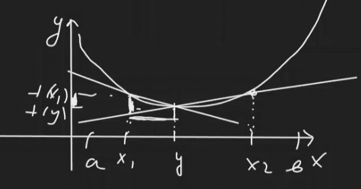

Критерий выпуклости
Пусть \(f\) определена на \((a, b)\), \(x_{1}, y, x_{2} \in (a, b), x_{1} < y < x_{2}\). Тогда \(f\) выпукла на \((a, b)\) \(\Leftrightarrow\) \(\dfrac{f(y) - f(x_{1})}{y - x_{1}} \leqslant \dfrac{f(x_{2})-f(y)}{x_{2} - y}\)
Геометрически, это две секущие: 
Следствие 1
А вот это знакомо со школы.
Пусть \(f\) дифференцируема на \((a, b)\). Тогда: \(f\) выпукла на \((a, b)\) \(\Leftrightarrow\) \(f^{\prime}\) не убывает на \((a, b)\).
Следствие 2
Пусть \(f\) – дважды дифференцируема на \((a, b)\). Тогда: \(f\) выпукла на \((a, b)\) \(\Leftrightarrow\) \(f^{\prime\prime} \geqslant 0\) на \((a, b)\).
Доказательство следует из теоремы Лагранжа.